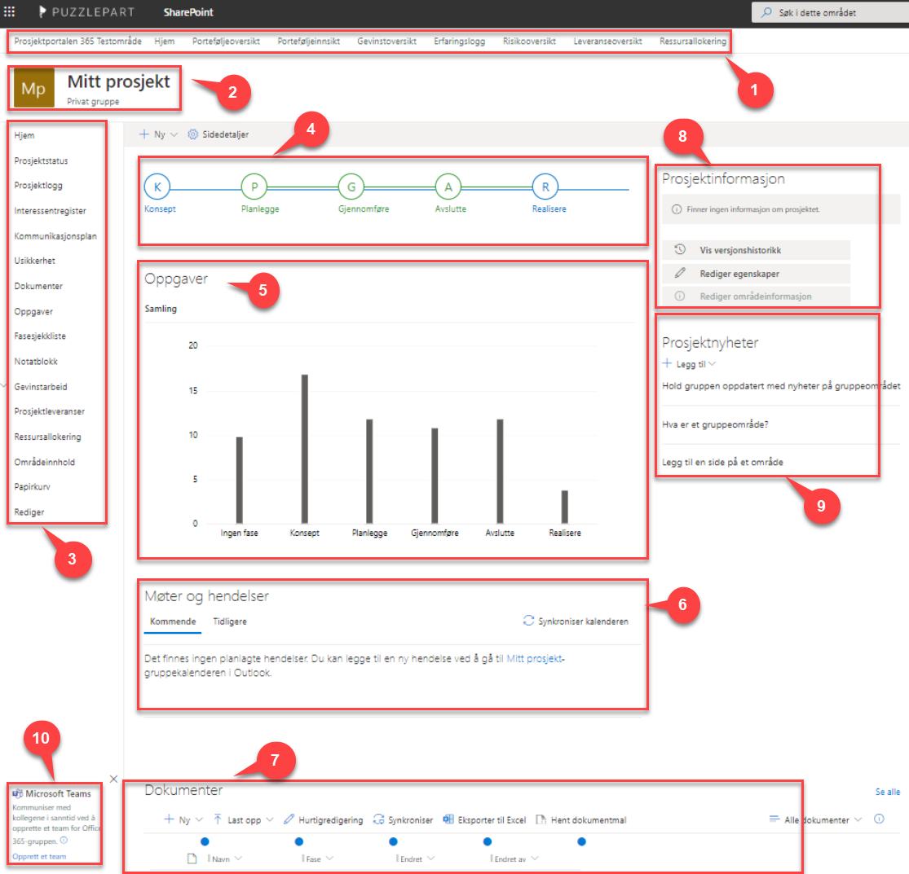

Et prosjektområde omfatter et enkelt prosjekt og alt innholdet i prosjektet. Hver installasjon av Prosjektportalen kan ha mange prosjektområder.
Før egenskaper for prosjektet er fylt ut, vil forsiden se ut som bildet under. Etter at prosjektets fase er satt, vil kun dokumenter og eventuelle usikkerheter knyttet opp mot gjeldende fase vises.

Porteføljemenyen vil til enhver tid kunne føre deg til valgt side på porteføljenivået.
Områdeikonet peker tilbake til forsiden av prosjektområdet. Ikonet kan endres for hvert prosjekt, se kapittel 2.6 for instruksjoner om hvordan dette gjøres.
Venstremenyen inneholder lenker til alle listene og verktøyene i prosjektområdet. I listene vil du ha tilgang til alle elementer uavhengig av fase, og det er også her det er enklest å legge til, endre eller slette innhold i lister og biblioteker.
Venstremenyen kan enkelt tilpasses til prosjektområdebrukernes behov ved å trykke på rediger.
Faseviseren markerer den fasen som prosjektet befinner seg i. Du kan endre fase, gå gjennom sjekkpunkter og få oversikt over hva som er gjennomført av sjekkpunkter på de ulike fasene.
Oppgaver viser en oversikt over alle prosjektoppgaver som ligger i Planner. Ved å redigere forsiden, kan du også endre hvilken visning du ønsker på dette feltet.
Møter og hendelser vil vise de hendelser som er lagt inn i gruppekalenderen i Outlook.
Dokumenter (gjeldende fase) viser alle dokumenter tilknyttet den fasen prosjektet er i. Hvis man ikke har satt fase vil alle dokumenter være synlig i denne komponenten.
Prosjektinformasjon legges nøkkelinformasjon om prosjektet. Før dette har blitt satt vil det være en påminnelse i rød skrift om at dette er noe som bør gjøres snarest mulig. Informasjon som legges inn her, blir også synlig på porteføljenivå. Du kan også endre tittel, beskrivelse og logo (områdeikon) for prosjektet i dette feltet.
Prosjektnyheter fungerer som prosjektets informasjonskanal. Her kan deltagere poste korte meldinger til hverandre eller til rommet generelt. Man kan også legge inn generelle lenker til både internt og eksternt materiell.
Teamskobling opprettes ved å velge «opprett et Team». Da vil et Team bli opprettet og koblet til Office365-området som prosjektet representerer.